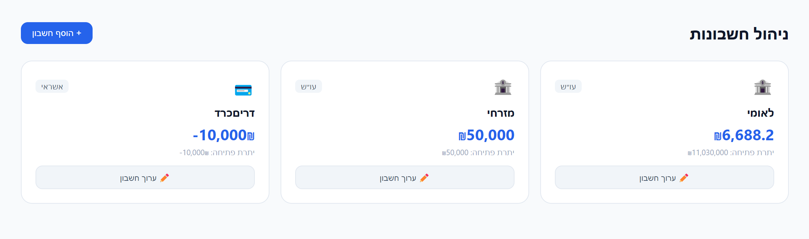
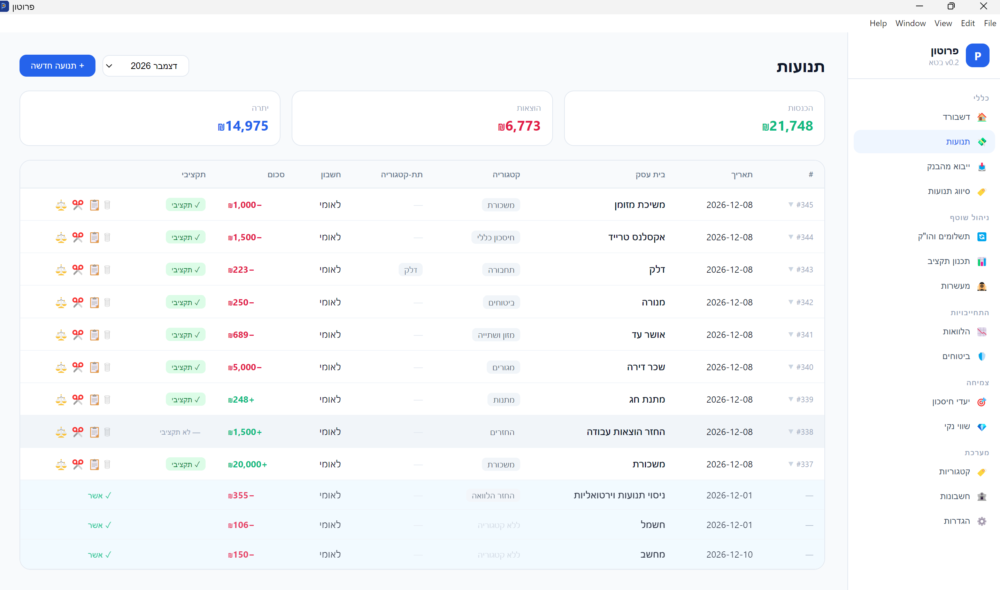
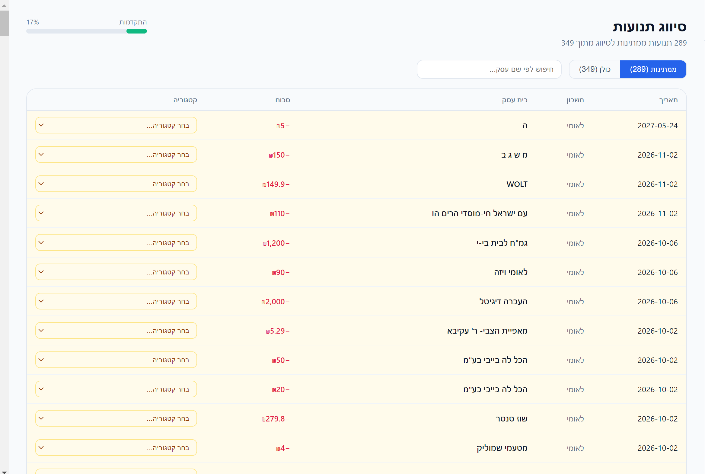
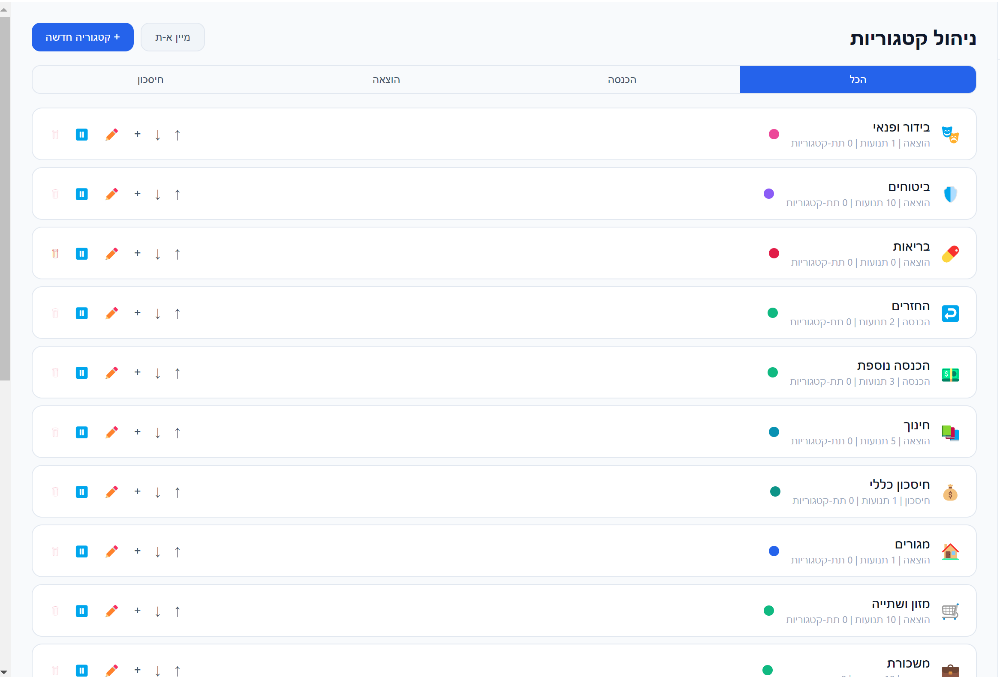
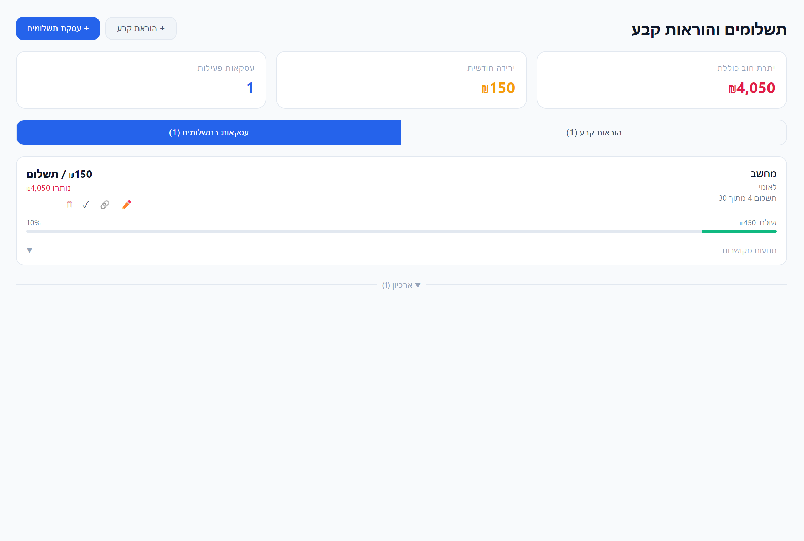
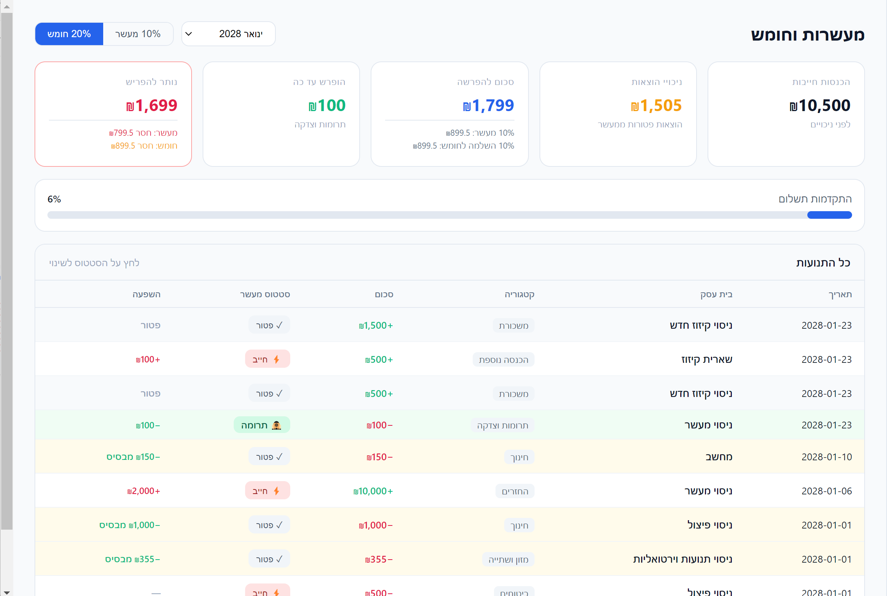
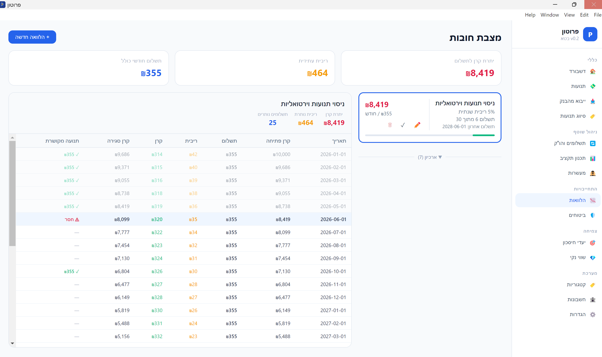
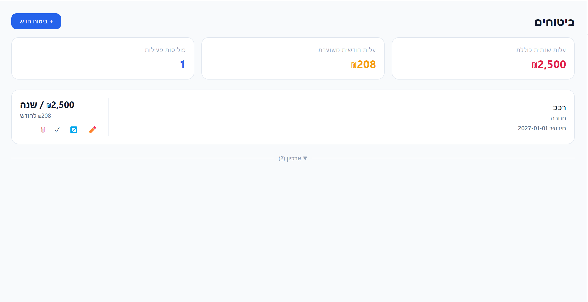
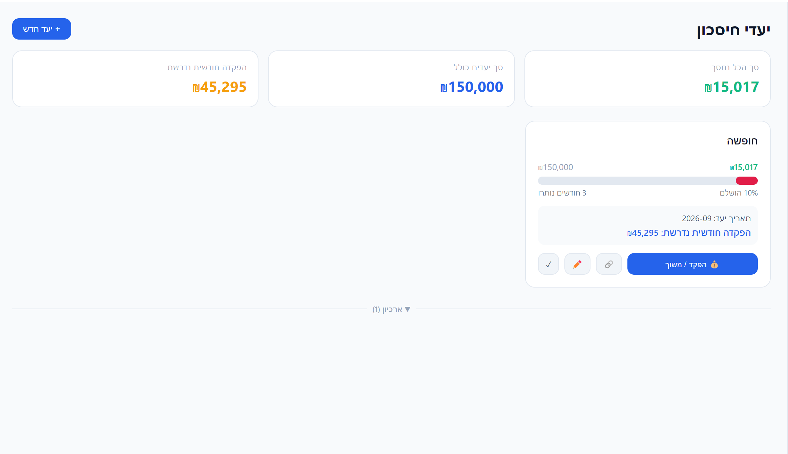
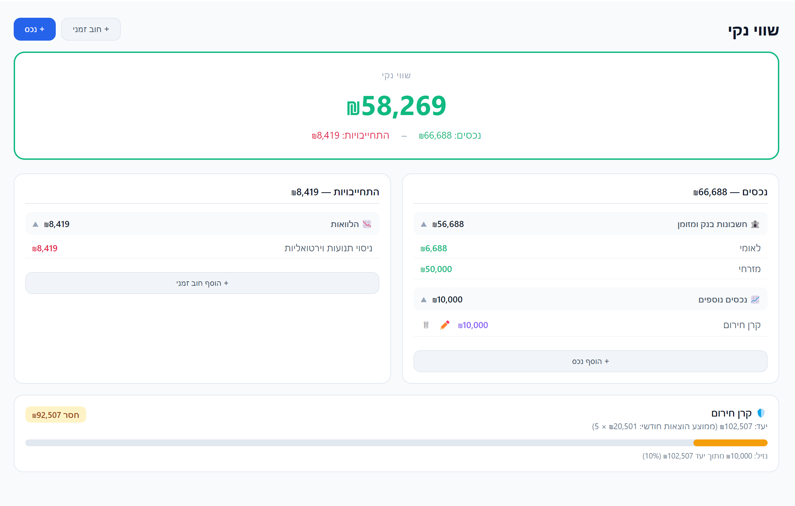

הדשבורד הוא מסך הבית — כאן תראה בבת אחת את כל מה שחשוב.
מה יש בדשבורד?
4 KPI עליונייםהכנסות, הוצאות, יתרה חודשית ויתרת בנקים לחודש שנבחר.
בקרת תקציבפס התקדמות שמראה כמה % מהתקציב נוצל — ירוק/צהוב/אדום.
שווי נקינכסים, התחייבויות ושווי נקי כולל.
גרף השוואתיהכנסות מול הוצאות ב-6 חודשים אחרונים.
התפלגות הוצאותדונאט לפי קטגוריות — אפשר לעבור לתצוגת 12 חודש.
מעשרותחובה, שולם ויתרה לתשלום — ישירות מהדשבורד.
💡
בחר חודש מהדרופדאון בפינה השמאלית — כל הווידג'טים מתעדכנים בהתאם.

כל תנועה במערכת חייבת להיות משויכת לחשבון. בלי חשבון — כלום לא יעבוד.
סוגי חשבונות
🏦 עו"ש (Bank)חשבון בנק רגיל. היתרה מחושבת אוטומטית מהתנועות.
💳 אשראי (Credit Card)כרטיס אשראי. יתרה שלילית = חוב, ומוצגת בהתחייבויות בשווי נקי.
💵 מזומן (Cash)כסף מזומן. מעקב ידני.
⚠️
יתרת פתיחה: הזן את היתרה הנוכחית בחשבון — זו נקודת האפס שממנה המערכת מחשבת. אפשר לתקן בכל עת.

מסך התנועות הוא המקום שבו כל הכסף עובר. ברירת המחדל מציגה כל הזמנים — אפשר לסנן לפי חודש.
עריכה מהירה
לחיצה כפולה על שורה פותחת עריכה inline — שנה תאריך, סכום, בית עסק וקטגוריה ישירות בטבלה. Enter לשמור.
אקורדיון מפורט
לחיצה אחת על שורה פותחת אקורדיון עם כל השדות: תאריך ערך, הערות, תגיות, שדות מקושרים (הלוואה, הו"ק, ביטוח, יעד חיסכון) ולינקים לפיצולים וקיזוזים. לחץ ✏️ ערוך הכל לעריכה מלאה.
פעולות מתקדמות
📋 שכפוליוצר תנועה זהה עם תאריך היום. שימושי לתנועות חוזרות.
✂️ פיצולמפצל תנועה לכמה קטגוריות (למשל קנייה בסופר — מזון + כלי בית).
⚖️ קיזוזמקזז הוצאה להכנסה. אם שילמת לחבר וקיבלת החזר — זה הכלי.
✓ תקציבימתג ירוק/אפור — האם התנועה נספרת בתקציב ובדשבורד.
👻
תנועות וירטואליות (בכחול) — תשלומים עתידיים שהמערכת מחשבת מהלוואות ומהו"ק. לחץ ✓ אשר כדי להפוך אותן לתנועות אמיתיות.
ייבוא עובד בשלושה שלבים:
שלב 1 — בחירת מקור

העלה קובץ Excel/CSV מהבנק. בחר לאיזה חשבון לייבא. אם יש מספר חשבונות בקובץ — בחר "ייבוא מרובה חשבונות" והוסף עמודה מזהה.
שלב 2 — מיפוי עמודות

מפה כל עמודה לשדה המתאים. שים לב לבחירת מבנה הסכום — עמודה אחת (עם +/−) או שתי עמודות (חובה/זכות).
שלב 3 — סקירה ואישור

המערכת מזהה כפילויות ומציעה קטגוריות אוטומטיות. עבור על הרשומות, תקן קטגוריות אם צריך, ולחץ ייבא.
🤖
זיהוי חכם: המערכת לומדת מכל סיווג ידני. ככל שתסווג יותר — היא תדייק יותר בייבואים הבאים.

כאן תסווג במהירות את כל התנועות שנכנסו ללא קטגוריה.
זרימת עבודה מומלצת
Tabעובר לדרופדאון הבא.
הקלדת אותמסנן את הרשימה (מ → מזון, ת → תחבורה).
Enterשומר ועובר לשורה הבאה.
עכברלחץ על הדרופדאון לבחירה ויזואלית.
💡
מתג "ממתינות / כולן" — ממתינות מסנן רק את מה שטרם סווג. הרשומה נעלמת מיד אחרי סיווג — זה נורמלי!

נהל את קטגוריות ההוצאות, הכנסות והחיסכון שלך.
היררכיהקטגוריה → תת-קטגוריה (עומק אחד). למשל: תחבורה → דלק, חניה, תחבורה ציבורית.
אייקון וצבעלכל קטגוריה אפשר לבחור אייקון וצבע — מוצג בכל המסכים.
מיוןגרור עם חיצי ↑↓ או לחץ "מיין א-ת".
השבתהקטגוריה עם תנועות לא ניתנת למחיקה — רק להשבתה (מוצגת באפור).

הגדר מסגרת לכל קטגוריה לחודש הנבחר. המערכת מחשבת ממוצע 3 חודשים אחרונים כהצעה.
Auto-saveהשינויים נשמרים אוטומטית — אין צורך ללחוץ "שמור".
ייבוא קבועותלחץ "ייבא קבועות" לייבוא התנועות הקבועות מטאב תשלומים והו"ק.
שכפולהעתק תקציב חודש שלם לחודש הבא.
ממוצעהמספר האפור מתחת לשדה — ממוצע 3 חודשים אחרונים.
💡
הרעיון: הכנסות פחות כל ההוצאות = 0. כל שקל מקצה לאיפשהו — גם אם לחיסכון.

שני סוגים של תנועות חוזרות:
🔄 הוראת קבעחיוב חוזר ללא תאריך סיום — ארנונה, ביטוח, נטפרי. ניתן להשהות.
💳 עסקת תשלומיםסכום קבוע למספר תשלומים מוגדר — קניית מוצר בתשלומים. כולל פס התקדמות.
המערכת יוצרת תנועות וירטואליות לחודשים הקרובים — תראה אותן בטאב תנועות עם כפתור "אשר".
🔗
שייך רשומות: לחץ על 🔗 כדי לשייך תנועות קיימות להו"ק — המערכת תזהה חפיפות לפי שם וסכום.

המסך מחשב כמה מעשר/חומש חייב לתת לפי ההכנסות החייבות.
מתג 10%/20%מעשר או חומש — ניתן לשנות בכל עת.
ניכוי הוצאותהוצאות מסוימות פטורות — המערכת מנכה אותן מהבסיס החייב.
סטטוס לפי שורהסמן כל הכנסה כחייבת/פטורה לפי שיקולך.
מעקב תשלוםכמה שולם עד כה ומה נשאר — עם פירוט לחומש (10%+10%).

נהל את כל ההלוואות שלך עם לוח סילוקין שפיצר מלא.
לוח סילוקיןמחושב Runtime — קרן, ריבית, תשלום לכל חודש עד הסוף.
תנועה מקושרתכל שורה בלוח מציגה אם שולמה בפועל (✓) או ⚠ חסר.
תנועות וירטואליותתשלומים עתידיים מוצגים בטאב תנועות לאישור.
ארכיוןהלוואות שהסתיימו עוברות לארכיון ולא נמחקות.
💡
תקופת גרייס: תומך בתקופת גרייס חלקית (ריבית בלבד) או מלאה (ללא תשלום).

עקוב אחרי כל הפוליסות שלך במקום אחד.
תאריך חידושמוצג בצהוב/אדום כשמתקרב — לא תופתע יותר.
חידוש חכםבעת חידוש — ההיסטוריה נשמרת והמערכת מראה האם התייקר או הוזל.
עלות שנתיתסיכום עלות כל הביטוחים שלך בשנה.
ארכיוןפוליסות שבוטלו נשמרות כהיסטוריה.

הגדר יעדים פיננסיים וקבל חישוב PMT אוטומטי — כמה להפקיד כל חודש.
חישוב PMTהמערכת מחשבת הפקדה חודשית נדרשת לפי ריבית ותאריך יעד.
הפקדה מהירהלחץ "הפקד/משוך" לרשום הפקדה חדשה או לשייך תנועה קיימת.
ריבית שנתיתהכנס ריבית פיקדון לחישוב מדויק יותר.
פס התקדמותויזואליזציה של כמה הגעת מהיעד.

תמונה מלאה של הנכסים וההתחייבויות שלך.
נכסיםחשבונות בנק, נדל"ן, תיק השקעות, פיקדונות ועוד.
התחייבויותהלוואות, חוב אשראי, אוברדראפט.
קרן חירוםכמה חודשי מחיה יש לך? מוגדר בהגדרות (ברירת מחדל: 3 חודשים).
חובות זמנייםלקחתי מחבר / הלוויתי — ניהול חובות לא רשמיים.
💡
חשבון בנק עם יתרה שלילית מוצג אוטומטית בהתחייבויות (אוברדראפט) ולא בנכסים.
| הגדרה |
מה זה עושה |
| יום ברירת מחדל |
כשמוסיפים תנועה על חודש קודם — איזה יום לשים. ברירת מחדל: 25. |
| בסיס חישוב תאריך |
האם הדשבורד מתבסס על תאריך עסקה או תאריך ערך. |
| חודשי מחיה בקרן חירום |
כמה חודשי הוצאות לשמור כקרן חירום. ברירת מחדל: 3. |
| שיעור מעשר |
10% מעשר או 20% חומש. |
| חוקי זיהוי |
כל הכללים שהמערכת למדה לסיווג אוטומטי. ניתן לערוך ולמחוק. |
| גיבוי ושחזור |
ייצוא/ייבוא של בסיס הנתונים כולו כקובץ .db. |
| איפוס מערכת |
מחיקת כל הנתונים. בלתי הפיך — עם אישור כפול. |
ניווט בין מסכים
פעולות
Ctrl+Shift+N
רשומה שנייה (תשלומים/שווי נקי)
Tab
מעבר בין שדות (סיווג תנועות)
💡
קיצורי המקשים עובדים גם עם מקלדת עברית וגם אנגלית.
עוד שאלות?
פתח Issue ב-GitHub ונשמח לעזור